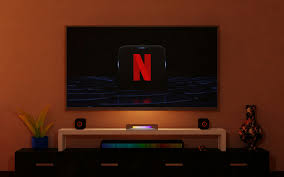

Los medios de entretenimiento tienen una historia que se remonta a la antigüedad y ha evolucionado a lo largo de los siglos para adaptarse a las necesidades y gustos de la sociedad. A continuación, se presenta un resumen del origen y la historia de los medios de entretenimiento:
Teatro: El teatro tiene sus raíces en la antigüedad, con los griegos y los romanos que desarrollaron la forma de entretenimiento en el teatro. Desde la época clásica hasta la Edad Media, el teatro continuó siendo una parte importante de la cultura y la sociedad. Durante la Edad Moderna, el teatro se desarrolló en Europa y América, y siguió siendo una forma popular de entretenimiento hasta el presente.
Música: La música ha sido una forma de entretenimiento universal desde la antigüedad. Con la creación de instrumentos musicales como la lira y la flauta, la música se convirtió en una parte integral de la cultura y la sociedad. A lo largo de los siglos, la música ha evolucionado para incluir nuevos géneros y estilos, como la música clásica, el jazz y la música popular.

Cine: El cine tiene sus raíces en los inicios del siglo XX, con los primeros experimentos con la película en movimiento. La primera película completa fue "El Cholo" en 1895, y desde entonces el cine ha evolucionado para convertirse en una forma popular de entretenimiento. Desde los primeros días del cine mudo hasta la época de la película sonora, el cine ha sido una forma de entretenimiento que ha capturado la imaginación de millones de personas en todo el mundo.
Televisión: La televisión comenzó a tomar forma en la década de 1920, con los primeros experimentos con la transmisión de imágenes en movimiento. La primera emisión televisiva regular fue en 1939, y desde entonces la televisión se ha convertido en una parte integral de la vida cotidiana. Desde los primeros días de la televisión en blanco y negro hasta la época de la televisión en color y la televisión por cable, la televisión ha sido una forma popular de entretenimiento para millones de personas en todo el mundo.
Radio: La radio tiene sus raíces en los inicios del siglo XX, con los primeros experimentos con la transmisión de ondas de radio. La primera emisión de radio fue en 1906, y desde entonces la radio se ha convertido en una forma popular de entretenimiento y noticias. Desde los primeros días de la radio en vivo hasta la época de las emisoras de radio por satélite, la radio ha sido una forma de entretenimiento que ha llegado a millones de personas en todo el mundo.
Videojuegos: Los videojuegos comenzaron a surgir en la década de 1950, con los primeros juegos de computadora como "Tennis for Two". Desde entonces, los videojuegos han evolucionado para convertirse en una forma popular de entretenimiento y distracción. Desde los primeros juegos de arcade hasta los juegos de consola y los juegos en línea, los videojuegos han llegado a millones de personas en todo el mundo.